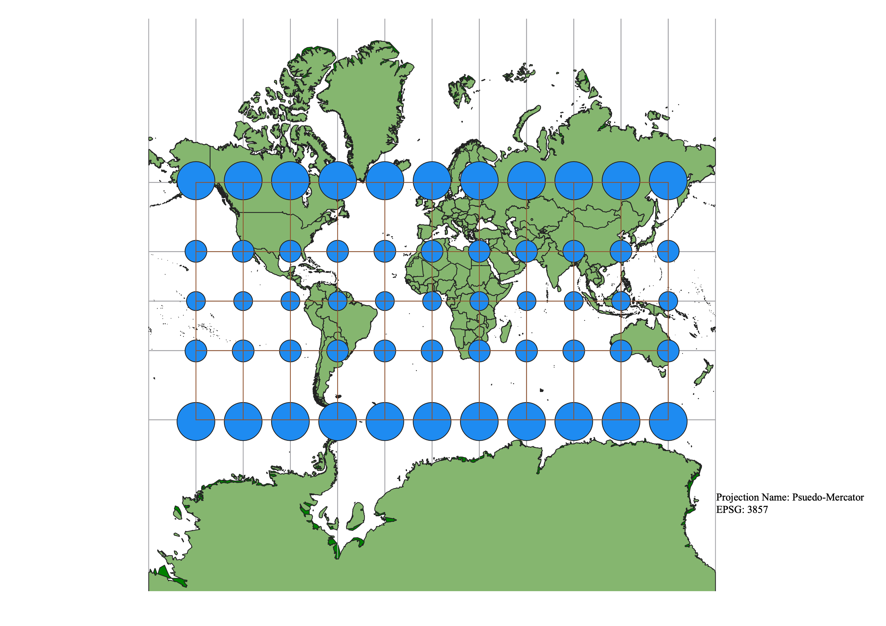
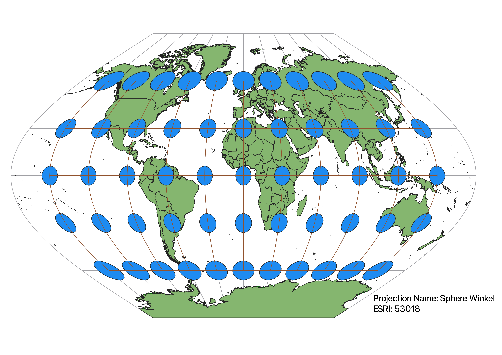
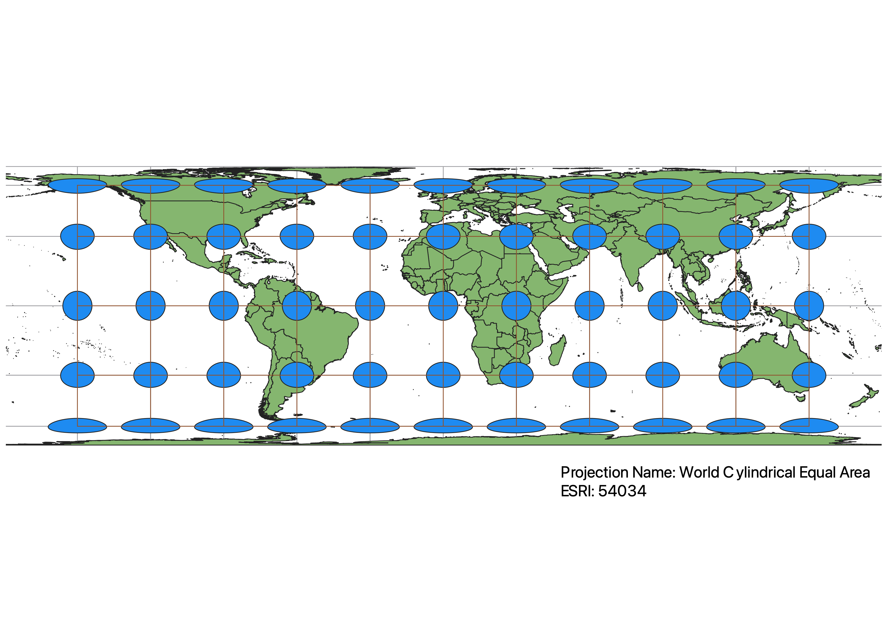
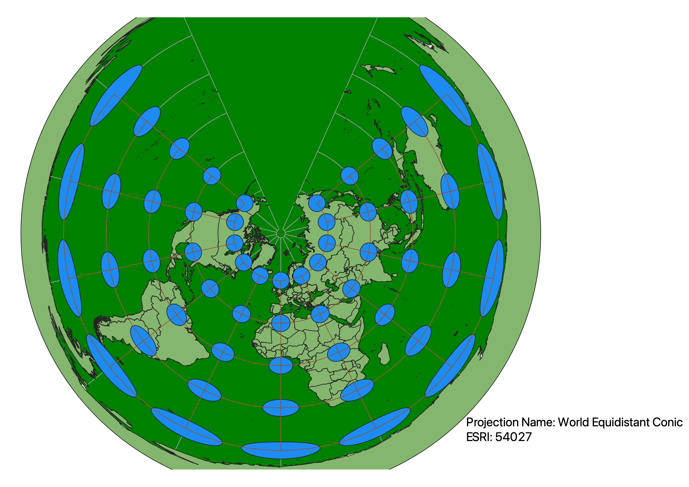
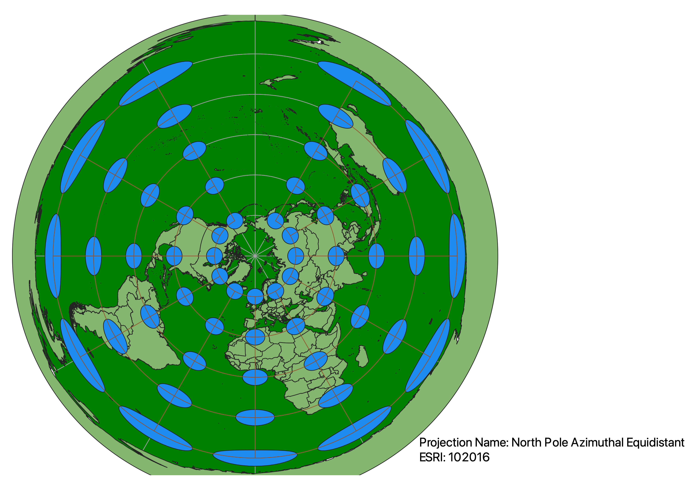
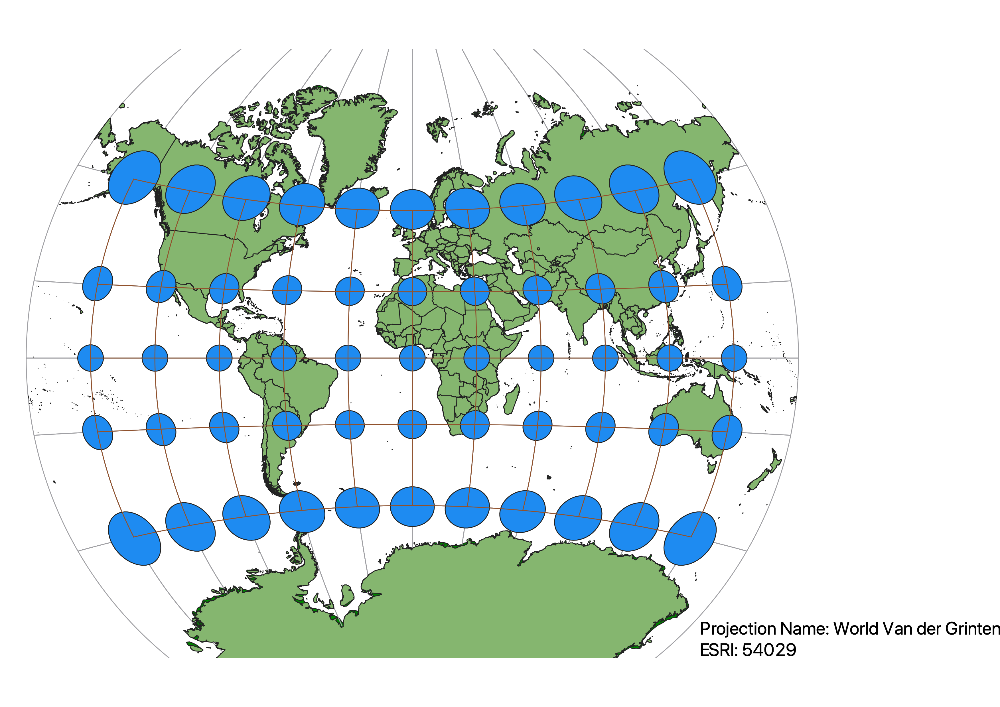
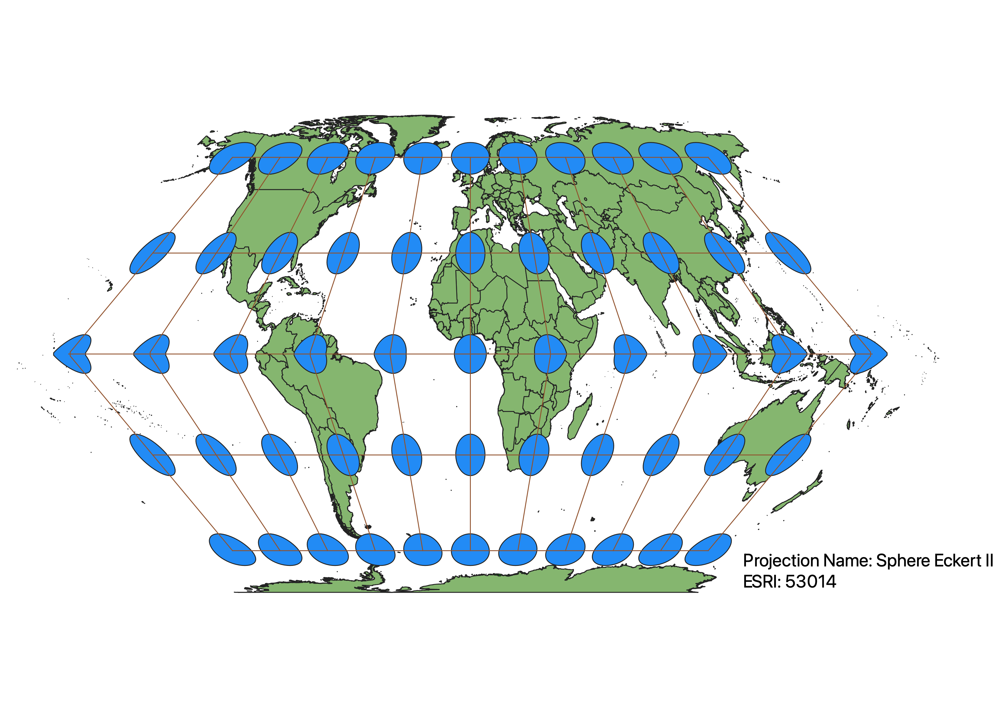

In this project I learned how to display images in different projections
I was able to use QGIS to display how different projections distort various features of a map. By
implementing the Indicatrix Mapper plugin, I projected a grid of circles and latitude longitude
lines onto the map. When the projection was changed, the circles changed in the same way as the
features in that area of that map, providing an easier visualization of what was being distorted
and where. The maps projected below show how various projections distorted either shape, area,
distance, and/or direction.
WGS84 Projection
This projection is most accurate around the equator. As we move towards the poles, shape and area
become distorted while the distance and direction remain the same. This would be a good projection
to use if you are trying to show an accuarte distance from one country to another.

Aitoff Projection
The most accurate projection is around the prime meridian, though towards the pole, area and shape
become slightly distorted. As we move away from the prime meridian and equator, all of the features
become distorted. This projection would be best when displaying the continent of Africa.

Pseudo-Mercator
The equator is the most accurate projection and as we move towards the poles distance and area
change while shape and direction remain accurate. This would be a good projection to show direction
on the map.

Sphere Winkel
The most accurate projection is near the poles on the prime meridian. As we move away from this
region shape, direction, and distance become distorted.

World Cylindrical Equal Area
The region along the equator remains the most accurate. Moving along the latititude, shape
becomes severly distorted and distance becomes slightly distorted, while direction is preserved.
This projection would be helpful if you are prioritizing equitorial regions.

World Equidistant Conic
This projection is the most accurate around the northern pole. As we move towards the equator,
shape and area become very distorted, while direction becomes slightly distorted and distance
remains accurate. This projection should be used when displaying regions near the north pole.

North Pole Azimuthal Equidistant
Similar to the last projection, as we move away from the north pole, shape and area become very
distorted, however, distance and direction remain accurate in this projection. This projection
would also be ideal for displaying regions near the north pole.

World Van der Grinten
The most accurate area in this projection is near the intersection of the equator and prime
meridian and as we move away from this point, all four features become more distorted.
This projection would be best when displaying the region near Africa.

Sphere Eckert II
This projection is the most accurate towards the poles, along the prime meridian. As we move
away from this area, shape and direction beocme distorted while distance and area remain the same.
This projection could be used to compare the areas of different countries.

Data used for this project
Download Natrual Earth 1:10m Cultural Vector